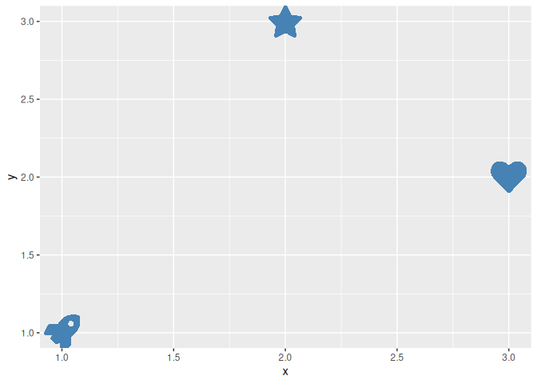
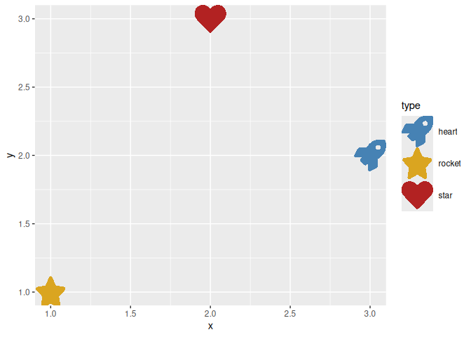
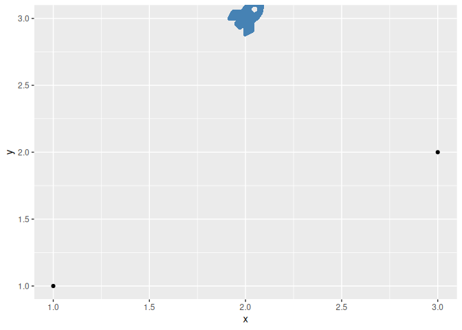
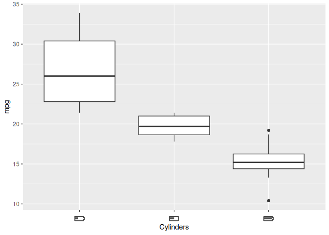
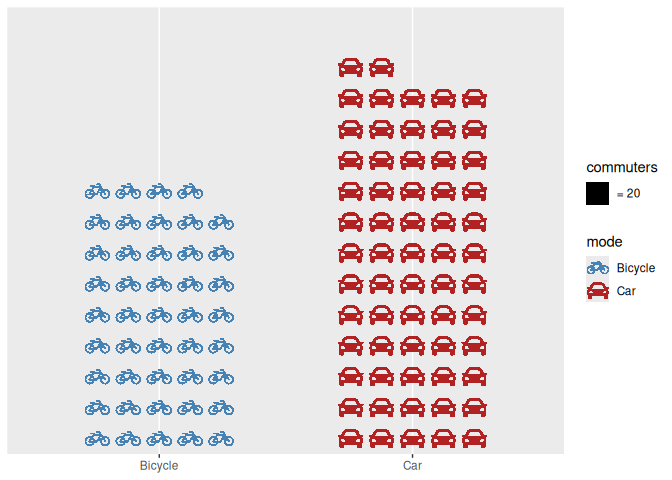

The ggicons package lets you visualise data with icons in ggplot2. It draws vector icons from the icons package directly in a ggplot2 plot. Icons can be mapped to data and drawn like points, placed at fixed positions as annotations, substituted in for axis, strip and legend labels, or repeated in a grid as an isotype-style pictogram (all styled with colour, size, alpha and angle aesthetics).
Installation
You can install the released version of ggicons from CRAN with:
install.packages("ggicons")You can install the development version from GitHub with:
# install.packages("remotes")
remotes::install_github("mitchelloharawild/ggicons")Usage
Drawing icons with geom_icon()
geom_icon() draws an icon per row at (x, y), in place of a point. Map an icon vector from the icons package (e.g. icons::fontawesome$solid$rocket) to the icon aesthetic, and style it with the usual colour, size, alpha and angle aesthetics:
df <- data.frame(
x = 1:3, y = c(1, 3, 2),
icon = c(
fontawesome$solid$rocket,
fontawesome$solid$star,
fontawesome$solid$heart
)
)
ggplot(df, aes(x, y, icon = icon)) +
geom_icon(size = 12, colour = "steelblue")
Mapping data to icons
If the icon aesthetic is already mapped to icon values, scale_icon_identity() passes them through unchanged. To map a discrete data column (e.g. a category) to an icon instead, use scale_icon_manual(). There’s no automatic discrete palette for icons, so values is always required. Since icon vectors can’t be named, values is matched positionally against the sorted data levels by default; pass limits to match against a different order instead:
df <- data.frame(
x = 1:3, y = c(1, 3, 2),
type = c("rocket", "star", "heart")
)
ggplot(df, aes(x, y, icon = type, colour = type)) +
geom_icon(size = 12) +
scale_icon_manual(
limits = c("rocket", "star", "heart"),
values = c(
fontawesome$solid$rocket,
fontawesome$solid$star,
fontawesome$solid$heart
)
) +
scale_colour_manual(
limits = c("rocket", "star", "heart"),
values = c(rocket = "steelblue", star = "goldenrod", heart = "firebrick")
)
Icons drawn with geom_icon() also appear as their own legend key glyph, via draw_key_icon(), so the legend shows the actual icon shape instead of a generic point.
Annotating a plot with a fixed-position icon
annotation_icon() adds one or more icons at fixed (x, y) positions, the icon analogue of annotate(). Unlike annotation_custom(), it does train the panel’s position scales, so placing an icon outside the data’s range still expands the axes to fit it:
ggplot(data.frame(x = 1:3, y = c(1, 3, 2)), aes(x, y)) +
geom_point() +
annotation_icon(
icon = fontawesome$solid$rocket,
x = 2, y = 3, size = 14, colour = "steelblue"
)
Icons as axis, strip and legend labels
element_icon() is a theme() element, parallel to element_text(), for use in axis.text, strip.text, legend.text and similar text-drawing theme settings. Any label matching a name in its icons lookup is drawn as that icon; every other label falls back to ordinary text:
battery <- list(
`4` = fontawesome$solid$`battery-quarter`,
`6` = fontawesome$solid$`battery-half`,
`8` = fontawesome$solid$`battery-full`
)
ggplot(mtcars, aes(factor(cyl), mpg)) +
geom_boxplot() +
labs(x = "Cylinders") +
theme(axis.text.x = element_icon(icons = battery, size = 16))
Isotype charts with geom_pictogram()
geom_pictogram() draws a value as a grid of repeated icons, some fraction of them filled in and the rest left faded, the way an isotype chart uses “each icon = n units” instead of a bar’s length. Leaving y out of aes() grows the grid upward like a column chart, with value mapped to how many icons are filled and icon/colour mapped to category:
commutes <- data.frame(mode = c("Bicycle", "Car"), count = c(890, 1230))
ggplot(commutes, aes(mode, value = count, icon = mode, colour = mode)) +
geom_pictogram(ncol = 5) +
scale_icon_manual(values = c(fontawesome$solid$bicycle, fontawesome$solid$car)) +
scale_colour_manual(values = c("steelblue", "firebrick")) +
labs(x = NULL, value = "commuters")
Each icon stands for a fixed amount (here, 20 commuters); guide_pictogram() spells this ratio out in the legend automatically.